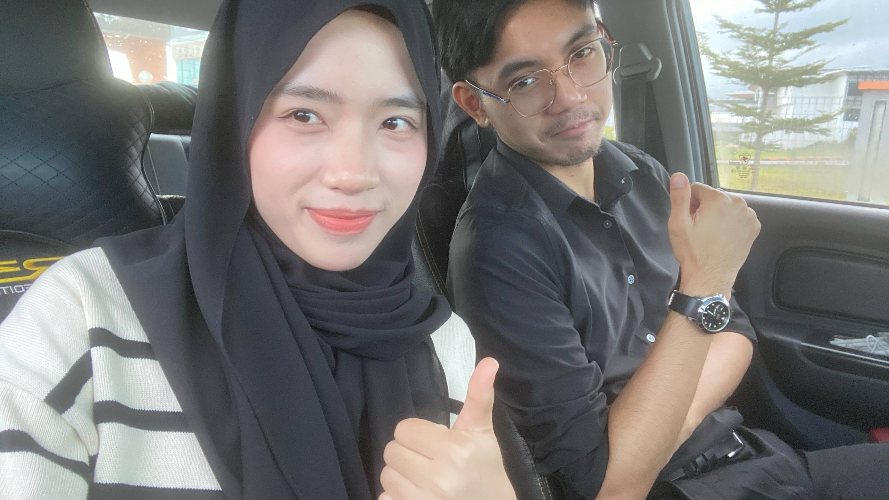
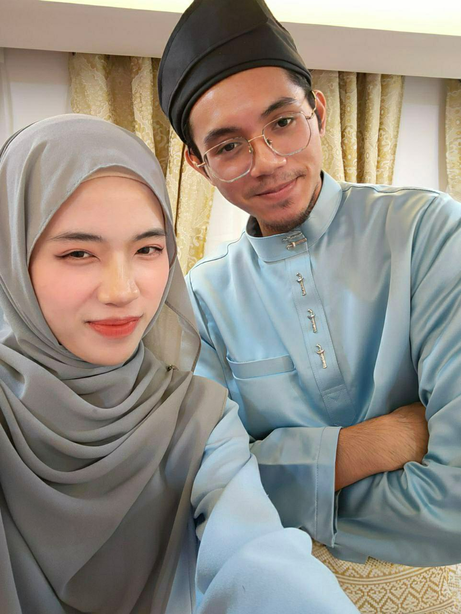

Wishing you a day filled with love, laughter, and endless joy! Hihihihi lamak dah kita bersama sik berasaa dah 3 tahun tuk nyambut birthday sama, lain tahun lain gik cara sambut birthday hshshs Wish kalituk abang rasaa sedih juakk, sama jak macam tahun tahun lepasss rasa sedih ngan happy dalam masa yang samaa sebab masih bertahan relationship ngan yayang. Banyakkk manis pahitnyaa yang kita dah lalui sama-sama hmmm, kadang di atas sama sama kadang di debah sama sama kita duak. Kadang menolong sama sama, kadang kelaie sama sama. Tapi masih juak kita kuat nak tempuh semuaa masalah yaaa
Selamat ulang tahun yang ke-21 sayanggg, makinnn berusia yaaa banyak banyaklaaa jaga diriii, benarpun makin berusia perempuan dah sik menumbuh gik, abang cadangkan stop gik berharap nak tinggi HAHAHHAHAH sekdalah hshshsh terus kuatkan semangatt harapan yayangg semua yaa jangannn mudah gilak give up. Sik senangg yayangg sejaoh tukk sik susah juakk yayangg bolehh jatuh balitt ntam apapaa hal yang mengganggu tapii sik bermaksud gangguan yaa sik bermakna, boleh jadii sebagaii tujuan hidup atau panduan atau hint untuk pergi ke sini gik hidup yaaa, apapaaa pun abangg tetapp disebelahh dibelakangg didepann yayangg demi support backup jagaa yayanggg, jadii seperti biasaa jangan maluu maluu nak mintak tolong dari abangg, kitaa bukan dua tiga hari baruk kenal yeeee, teruskan olah siktauk maluu ngan abangg, teruskann mengaduu teruskann berharapp teruskann bergantung ngan abang sebab abangg bukann orang yang ngungkit, banyak niii punn abang berik ngan yayangg dari segi kasih sayangg, attention, keperluann abangg sik kira, abangg kira semua ya sebagaii tanggungjawab abangg effort abangg sebagai bakal suami yayanggg, abang mok buktikan yangg yayangg sik salah pilih pasangan, ada masanya mungkin abang polah salahhh and abang mintak maaf pasal yaa sebab abangg sik sengajaa juakk polahh salahh
